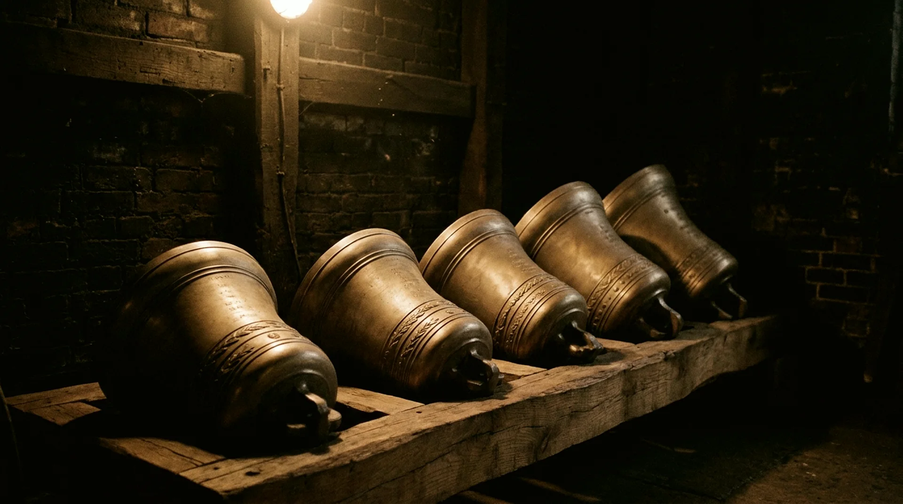
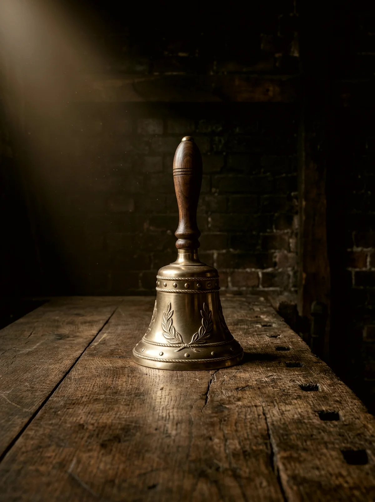
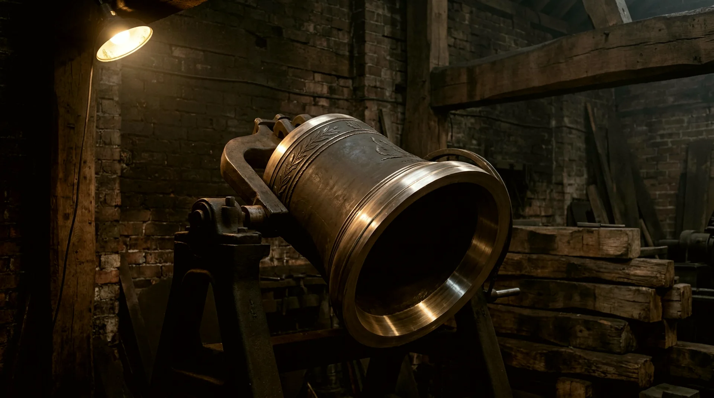
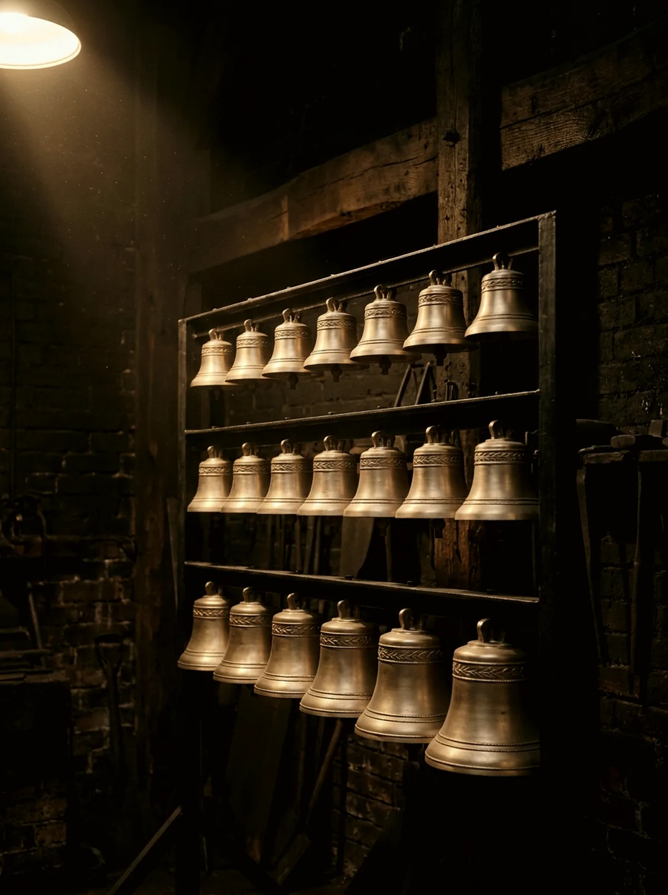
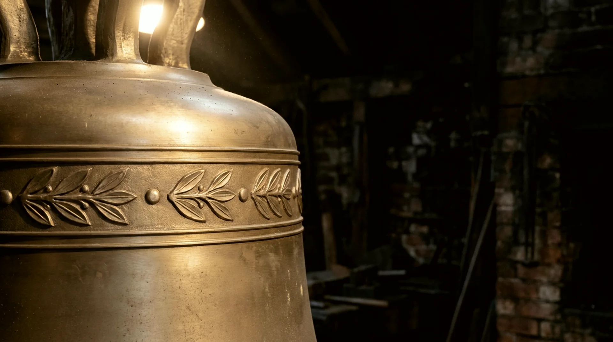
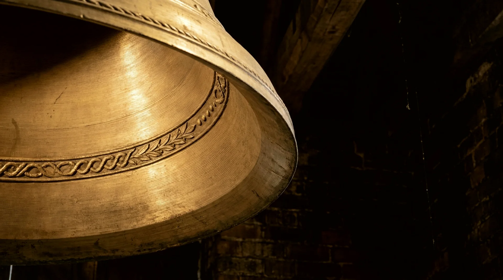

The work · Four trades in one yard
The bells
Everything we make is a bronze vessel tuned to five notes; the differences are of scale and company. A single bell tolls the hour alone. A ring changes with seven sisters. A carillon plays whatever the carillonneur can carry. Where a weight appears below, it is computed from the same rules as our commission tool — name a note on any bell here to hear it.

01 · Single bells
One voice, one duty
Hour bells, service bells, memorial bells, ships' bells grown ambitious. A single bell is the purest commission: one note chosen for one purpose, heard alone, judged alone. Most of the great bells of the world are singles — a tenor with the parish to itself.



02 · Rings & peals
Eight sisters, one blood
For change ringing in the English manner: six, eight, ten or twelve bells hung for full-circle work, cast to one profile family so they speak as one voice at eight weights. We cast a ring together, from one furnace campaign, for the same reason a family shares a name.
A ring of eight, tenor in E4 — —
03 · Carillons
An instrument the size of a tower
Twenty-three bells and upward, chromatic, played from a baton clavier — the largest musical instrument in common use. We cast, tune, and voice the full compass, and rig the transmission so a carillonneur's pianissimo survives forty metres of tower.


The day book · Recent castings
Lately out of the yard
04 · Restoration
Older than us, and staying that way
Cracked crowns, worn cannons, clappers striking a century off true — most of our tower work is not casting at all, but keeping other founders' bells alive. We survey in place, rehang on new fittings, and where a bell is past saving we recast it with its old metal in the new pour, so the parish keeps its own bronze. A medieval bell that can be saved is never recast; we are not in the business of deleting other men's work.

Whatever rings, or ought to
One bell or thirty-five, new bronze or your grandfather's — start with the note, and we will take it from there.